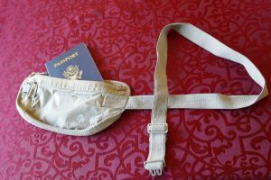

A scam is when a person takes advantage of tourists who aren't familiar
with the tactics used to try to take money or other valuables.
Types of Scams
The clipboard charities scam is when someone asks tourists to sign a
petition. When the tourist is distracted, somebody else does the
pickpocketing. This scam happens at the Eiffel Tower and Notre Dame.
The ring scam is when a person approaches a tourist saying they found a
ring. If a tourist takes it, the scammer demands money. This scam is
found at the Arc de Triomphe.
Ring scam
The shell game scam is when a scammer manipulates a ball under shells
while the partner in the scam pickpockets the tourists who are distracted
by the game. Also the person betting money will lose. This scam happens at
the Eiffel Tower.
The friendship bracelet scam is when a scammer ties a string to a
tourist's wrist and wants money in return. This scam can be found near
Sacré-Coeur, a church in Montmartre.
The map scam is when someone pretends to be a lost tourist with a map
while a different person pickpockets the victim who is trying to help the
fake tourist.
How to Avoid Scams
Distracted people
Be aware of your surroundings.
If someone hands you something that doesn't belong to you,
don't take the item.
Charities in Paris don't ask for money on the streets, so don't give any
money.
Avoid people with handfuls of strings in their hands.
Don't watch the shell game because tourists can be pickpocketed while
being distracted.
Helpful Tips
Learning French phrases is beneficial when requesting
help from locals.

Money belt
Wear a moneybelt under clothing to avoid pickpocketing.
Don't wear flashy jewelry.
Always be aware of your surroundings.
Dress like the Parisians do. They typically wear dark solid color
clothing.